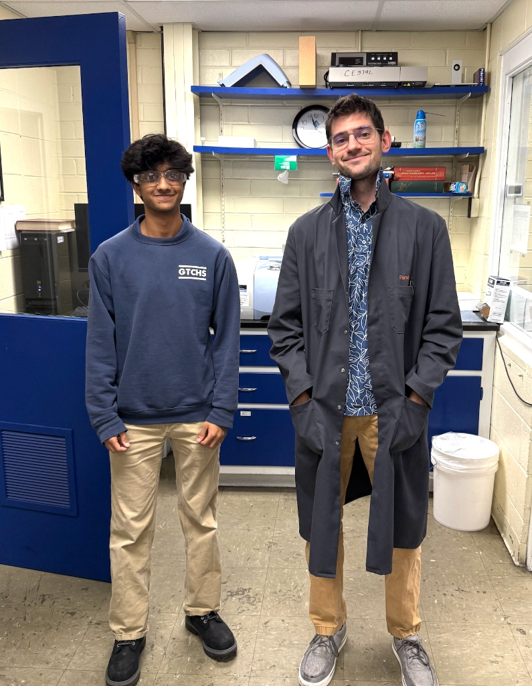

Entering
The
Laboratory
STARTING OUT & STEPPING INTO THE LAB
"What I do is solve problems and learn whatever I need to learn — and as long as you can do those two things, you'll be able to do anything in any field you really want to."
— Nathan Pando, Mentor
This section documents my first steps inside the lab and the beginning of my working relationship with my mentor, Nathan Pando. It includes my mentor biography, interview transcript, and the conference sheet and reflection from my first month. September was about finding my footing, learning how the lab operated, what was expected of me, and how to start applying what I knew in a real environment. The quote above from Nathan captures something I came to understand firsthand over the course of this internship, and it starts here.
02.1 Mentorship
Mentor Portrait

Akaash Srivastava & Nathan Pando